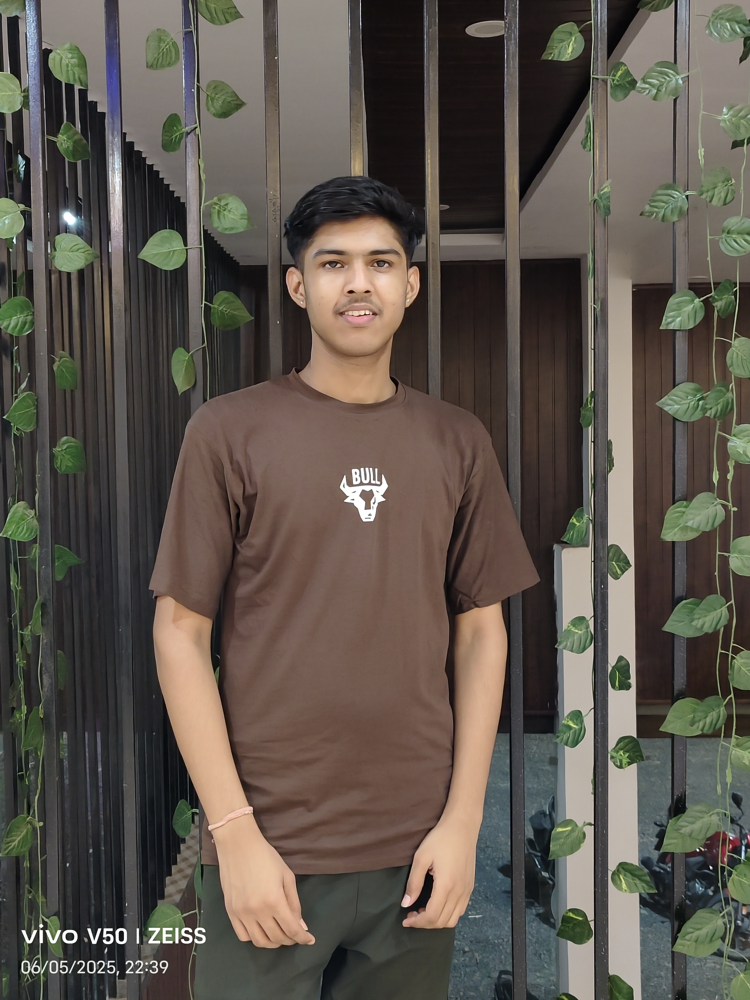

I am a passionate and curious learner who enjoys building digital projects and continuously improving my skills. I love exploring technology, solving problems, and creating clean and user-friendly experiences.

Building my skills through learning, projects, and practical experience.
Some projects built while learning, exploring, and improving my development skills.
Responsive portfolio website built using HTML and CSS with modern UI and animations.
Created small PHP programs to practice operators, loops, arrays, and logic building.
Built beginner Java programs to strengthen problem-solving and backend concepts.
Worked on video editing and content creation to improve visual storytelling.
My academic journey and continuous learning in development and technology.
Affiliated to Medi-Caps University
Currently developing skills in programming, web development, backend concepts, and practical projects.
State Board / MP
Completed higher secondary education while strengthening analytical and technical foundations.
State Board / MP
Built academic fundamentals and developed curiosity towards technology and learning.